Introduction to Our AI Model
Overview
Our cutting-edge AI model is designed to assist in the annotation and analysis of cilia for PCD diagnosis.
Our AI model is meticulously trained on a vast dataset of annotated microscopic images, meticulously labeled by expert pathologists.
Through advanced machine learning algorithms, the model has been primed to identify and classify various features of cilia with remarkable precision.
Limitations
Like any AI system, occasional false positives or false negatives may occur.
Therefore, human oversight and validation remain crucial in interpreting the model's annotations.
Also, our model does not annotate all cilia but only those that are mostly certain.
Thus, the images still need to be checked and annotated.
Performance
Mean predictor error: ±5%
Max predictor error: ±15%
The AI tool can explain 85% of the variation od the training data
 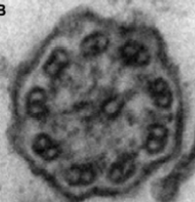
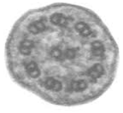
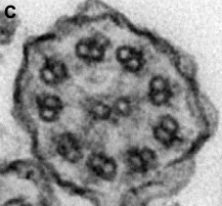
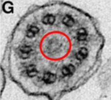
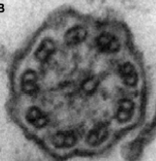
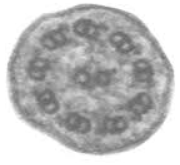
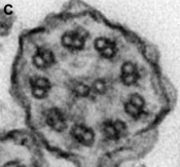
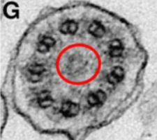

Information about AI decision
Microtubular defect: Compound
Dynein arms defect: No arms missing
Confidence level: 90%
Decision tree
Microtubular defect type

Dynein arms defect type
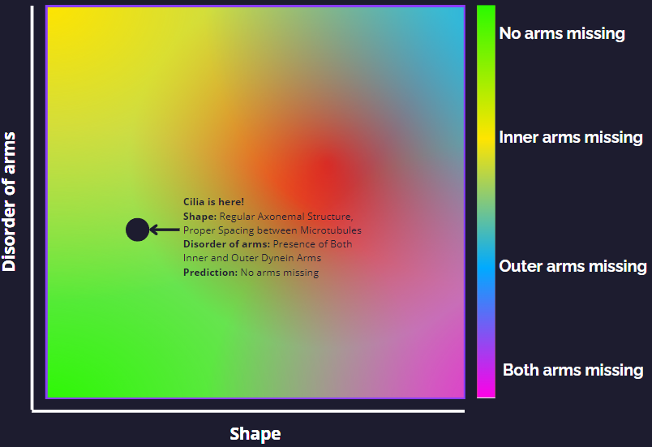Microtubular defect feature
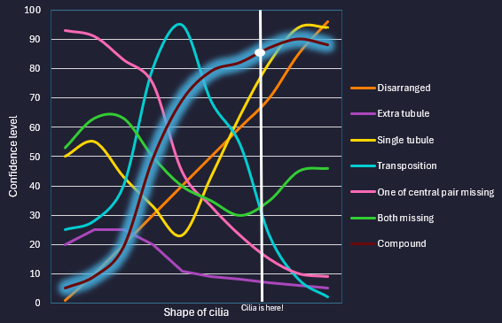Dynein arms defect feature
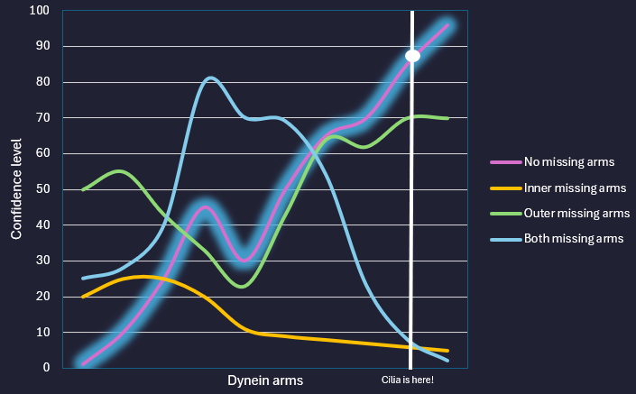Annotated cilia:
Similiar compound cilias with no missing arms:
Why is it not other defect:
Give us feedback
Step 1 of 5
Thank you for your feedback on CiliaScan!
We sincerely appreciate you taking the time to share your thoughts with us. Your feedback is incredibly valuable and will be instrumental in helping us enhance the CiliaScan experience for all our users.
If you have any further comments or suggestions, please don't hesitate to reach out to us. We're committed to delivering the best possible experience and greatly value your input.
Thank you once again for your valuable feedback!
1. Overall Satisfaction
How satisfied are you with CiliaScan?
2. Ease of Use:
How easy was it to learn how to use CiliaScan?
Did you encounter any difficulties or challenges while using the annotation tool?
3. Functionality and Features:
Which features of CiliaScan did you find most useful for annotating cilia and diagnosing PCD?
Are there any additional features or functionalities you would like to see added to CiliaScan?
4. Accuracy and Reliability:
How accurate do you find the AI model's annotations in CiliaScan?
Have you encountered any instances where the AI model's annotations were inaccurate or unreliable?
5. Suggestions for Improvement
Do you have any suggestions for how we can improve CiliaScan to better meet your needs?
Is there anything specific you would like to see changed or enhanced in future updates of CiliaScan?
6. Demographic Information:
Optional: Please provide some demographic information (e.g., occupation, years of experience in pathology) to help us better understand our user base.
7. Demographic Information:
Is there anything else you would like to share about your experience with CiliaScan?